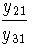
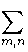
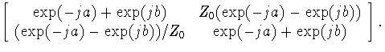
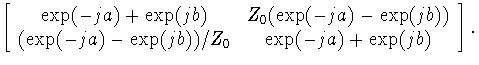

Up: W9CF Home
This is the text accompanying a letter I sent to QST in January 1996,
suggesting this for a possible technical correspondence column. It
was rejected by the editors.
A less than magic bullet
Kevin Schmidt, W9CF
Roy Lewallen in the ARRL Antenna Book[1] named
a lossless network that would produce currents
through two driven impedances
with equal magnitude, and a relative 90
degree phase, independent of
the values of the two driven impedances, a ``magic bullet.''
If the magic bullet existed, it would make it possible to
feed antenna elements in quadrature without having
to make accurate measurements of
the self and mutual impedances of the elements.
The general magic bullet would produce any desired relative phase.
In the following I show that such a network cannot be realized
with a reciprocal lossless network
except for phase differences of 0 or 180 degrees.
A nonreciprocal lossless network can produce other phase shifts.
I show how to make a nonreciprocal transmission line
by using a circulator. This produces the magic bullet, but
the requirement that nonreciprocal elements are needed will
probably limit the usefulness to UHF and microwave frequencies.
The system can be thought of as a general three-port network. Take
port 1 to be the input port, and
ports 2 and 3 to be output ports. Define the current to flow
out of the network when the current is positive.
The admittance parameters yij are defined
by
For convenience, I take the driving voltage on port 1 to be 1.
The impedances
connected to ports 2 and 3 are Z2 and Z3 , so that
V2 = Z2I2
and
V3 = Z3I3 . Plugging these in to the admittance equation
gives the equations
|
(1 - y22Z2)I2 - y23Z3I3 = y21,
|
|
| |
|
- y32Z2I2 + (1 - y33Z3)I3 = y31.
|
|
| (2) |
Solving for the ratio of the currents gives,
This ratio must be constant
independent of
Z2 and Z3 for there to be a ``magic bullet.''
This requires that the numerator and denominator be the
same function of Z2 and Z3 except for an overall constant factor.
Since the numerator has no Z2 dependence, the coeficient of the
Z2 term in the denominator must be zero. Similarly since the denominator
has no Z3 dependence the coefficient of Z3 in the numerator
must be zero. The condition on the constant term for a magic bullet
with a phase difference of  radians is
radians is
|
 = exp(j ). ).
| (4)
|
Therefore y21 and y31 cannot be zero, and the requirements
on the coefficients of Z2 and Z3 give:
|
y22 = y23 = y32 = y33 = 0.
| (5)
|
For the cases of 0 and 180 degrees, Lewallen's current forcing
solution using
1/4 wavelength lines, gives
y22 = y32 = y23 = y33 = 0 ,
and
y21/y31 =  1 , as required.
1 , as required.
A lossless network cannot absorb power. This requirement is
expressed by the equation
|
V *m(ymn + y *nm)Vn = 0,
| (6)
|
and must hold for all driving voltages.
If I terminate two of the ports with short circuits, and drive
the third, I find
that the diagonal elements of the y matrix must
be purely imaginary. If I terminate one of the ports with a short circuit,
and drive the other two at various relative phases, I
get the requirement
y *mn = - ynm for a lossless
network.
If I now assume that the network is reciprocal,
ymn = ynm . Therefore the off diagonal
elements must be purely imaginary as well. The ratio of two of
these admittances can have only a phase of 0 or 180 degrees.
This says that for a reciprocal lossless network, only 0 or 180
degree phase differences can be ``current forced.'' Since capacitors,
inductors, transformers, and normal transmission lines
are reciprocal elements, no combination of them can produce
the magic bullet.
If I introduce ferrites, or other nonreciprocal elements, it is
possible to current force other phase differences.
The form of the admittance matrix required for current forcing is suggestive,
This form says that there cannot be any interaction between ports
2 and 3 except through their connection to port 1. That means that
this form is synthesized by connecting two 2-port networks. One
from port 1 to port 2, and the other from port 1 to port 3.
These networks must have admittance matrices with a lossless
``current forcing'' form:
Since the reciprocal case can be synthesized using a transmission
line, I attempt to synthesize the nonreciprocal case using a lossless
nonreciprocal transmission line. Such a line that can be physically
realized has a
characteristic impedance Z0 , with an electrical length for
the forward mode of a radians, and b radians for the reverse
mode. Its ABCD parameters are obtained by expanding in the
modes:
|
=   
| (9)
|
To have the current forcing form, we need to zero the diagonal terms.
That requires a + b to be an odd multiple of  , which then
gives
exp(jb) = - exp (- ja) . The result for the ABCD matrix
is
, which then
gives
exp(jb) = - exp (- ja) . The result for the ABCD matrix
is
These are lines that force a current of magnitude V/Z0 with
a phase lag of a . Notice that only for the case of a = b ,
both equal to an odd multiple of /2
will the line be reciprocal. These reciprocal lines
are Lewallen's odd multiple of a quarter wavelength lines.
The admittance matrix can be derived from the ABCD matrix
to give:
A standard circulator
can be used to produce current forcing lines with any phase
shift.
The general line can be produced using a circulator where power into
port 1 goes to port 2, power into port 2 goes to port 3, and power into
port 3 goes to port 1. If I put an adjustable shorted line on
port 3, the forward wave travels ``directly'' to port 2, the reverse
wave travels from 2 to 3 where it travels up the adjustable line, reflects,
and then travels back to port 1. By adjusting the line, I can make
the electrical length in the reverse direction anything I want.
I now simply add extra line to port 2 so the electrical length
from 1 to 2 is what I need, and adjust the shorted stub on 3 to give
a total electrical length that is an odd multiple of a half wavelength.
The problem with this nonreciprocal technology is that it works
well only at UHF or higher frequencies.
The special case of the nonreciprocal element with a = 0 and
b = was postulated by Tellegen[2] in 1948. He
called it a gyrator using
a mechanical analogy where nonreciprocal elements correspond to
spinning flywheels (i.e. gyroscopes).
Within a few years, a ferrite gyrator and other nonreciprocal elements
for microwave frequencies had been described[3].
If a medium or high frequency gyrator
could be constructed, it would provide the necessary element
to produce a quadrature feed without measuring element impedances.
For a quadrature feed,
one antenna is connected to a quarter wavelength
transmission line, and the other to a gyrator of the same
characteristic impedance. The ends of the gyrator and the quarter
wavelength line are
connected together and driven by the same source.
- 1
-
R.W. Lewallen, page 8-14 in The ARRL Antenna Book, 17th Edition,
edited by R.D. Straw, (ARRL,Newington,1994).
- 2
-
B.D.H. Tellegen, The Gyrator, a New Electric Network Element,
Philips Research Reports 3, 81 (1948).
- 3
-
C.L. Hogan, The Ferromagnetic Faraday Effect at Microwave Frequencies
and Its Applications, Reviews of Modern Physics 25, 253 (1953).
Subsections
Up: W9CF Home